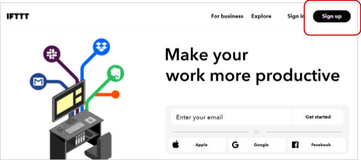
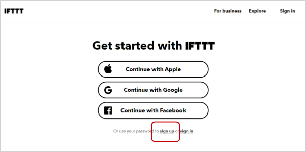
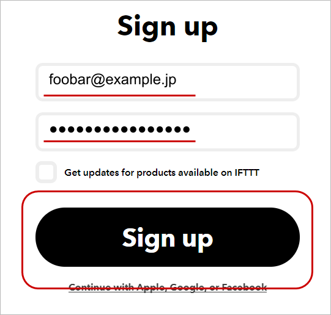
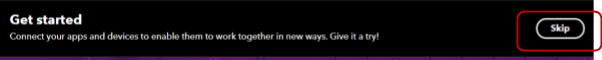
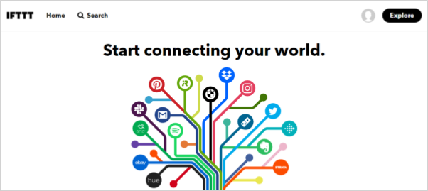
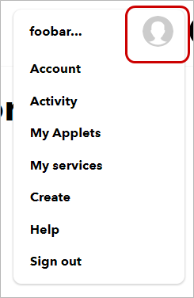
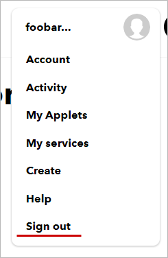
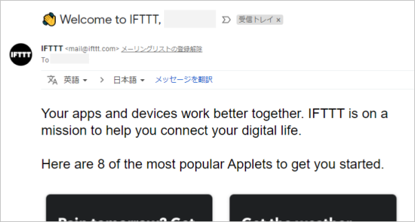

IFTTT(イフト) アカウントの作成方法をゼロから学びます。
ページの内容を読み、また作業を行ったら右下の［Next］を押して次のステップへ進みます。また、［Back］を使って戻ったり、左のナビゲーションメニューでもページの移動が可能です。
左上の［×］を押してコンテンツを終了することができます。また、ページを開きなおすことで再開できます。ページのアドレスはブラウザの［履歴］メニューを利用してください。
SORACOM アカウントを作成するにあたり、以下のものを用意、もしくは、確認・検討ください。
パソコン、 ブラウザー、インターネット接続環境 | SORACOM ユーザーコンソールにアクセスする環境です。 Google Chrome 等の最新ブラウザーをお使いください。スマートフォンやタブレットでは操作が完了できない場合があります。 また、社内システム設定等のアクセス制限がある場合は解除できるようにしてください。 |
メールアドレス | IFTTT 管理画面へログインする際の ID となります。 また、アカウント作成を完了するための確認メールや、パスワード再発行時の通知等、IFTTT 側からの重要な連絡にも利用されます。そのため、有効なメールアドレスとすぐみられる環境をご用意ください。 複数の方への通知が必要な場合は、メーリングリストのご利用をご検討ください。アカウント作成後に変更できます。 |
パスワード | IFTTT 管理画面へログインする際のパスワードとなります。 6 文字以上の文字列です。 アカウント作成後の変更や、忘れてしまったとしても再設定が可能です。 |



入力が完了したら［Sign up］をクリックします。
右上の［Skip］をクリックします。

以下が IFTTT 管理画面です。以降、ログインした時にはこの画面が表示されます。

これで IFTTT 管理画面が利用可能となりました。これ以降の操作方法について解説します。
アカウントの設定やアプレット (IFTTT における「アプリケーション」のようなもの)の管理をするためのメニューは、IFTTT 管理画面右上のをクリックすることで進められます。

メニューの［Sign out］をクリックします。

アカウントを作成したあと (約5 ~ 10分後程度)に、アカウント作成時に利用したメールアドレスにメールが届きます。こちらについては特にアクションをする必要はありません。
メールのサンプルです。

以上で IFTTT アカウントの作成は終了です。